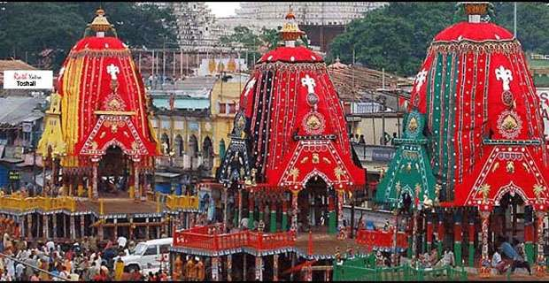

Welcome to Odisha!

Odisha, located on the eastern coast of India, is known for its rich cultural heritage, historical significance,
and natural beauty. The culture of Odisha is a vibrant blend of ancient traditions, classical arts, and diverse
festivals that reflect the state’s historical and cultural depth.
Festivals play a pivotal role in the cultural life of Odisha. The most prominent festival is Rath Yatra,
celebrated in Puri, where massive chariots carrying the deities Jagannath, Balabhadra, and Subhadra are pulled by
devotees. Other significant festivals include Durga Puja, celebrated with great enthusiasm across the state, and
Raja Parba, a festival celebrating womanhood and the earth's fertility. These festivals showcase the state's
spiritual fervor and community spirit.
Odisha’s cuisine is known for its simplicity and flavor, with rice being the staple food accompanied by a variety
of vegetables, lentils, and seafood. Popular dishes include Dalma (lentils cooked with vegetables), Pakhala
(fermented rice), and Chhena Poda (a sweet made from fresh cottage cheese). The cuisine often features minimal
spices and relies on the natural flavors of the ingredients, reflecting the state’s agrarian lifestyle.
Music and dance are integral to Odisha’s cultural identity. Odissi, one of the oldest classical dance forms in
India, originates from this state and is known for its graceful movements and expressive gestures. Folk dances
like Chhau and Gotipua are also significant, performed during festivals and special occasions. Traditional music,
characterized by instruments like the mardala (drum) and the flute, often accompanies these dance forms, creating
a harmonious cultural experience.
Odisha’s architectural heritage is a testament to its glorious past. The state is home to magnificent temples like
the Sun Temple in Konark, known for its intricate stone carvings and iconic chariot design, and the Jagannath
Temple in Puri, a major pilgrimage site. These architectural marvels attract tourists and pilgrims from around the
world, showcasing Odisha’s historical and cultural significance.
Handicrafts from Odisha are renowned for their craftsmanship and artistic excellence. Pattachitra (scroll
paintings), silver filigree work, and appliqué work from Pipili are some of the notable crafts that reflect the
artistic skills of the local artisans. These crafts are often used in daily life and rituals, highlighting the
community's connection to their cultural heritage.